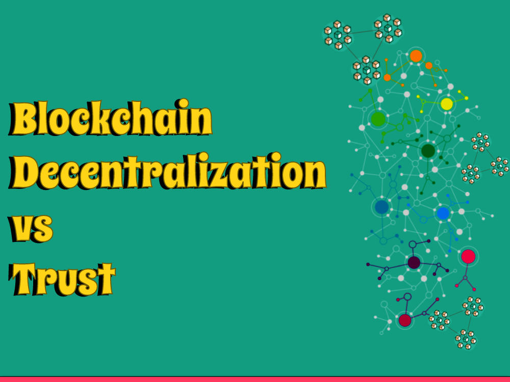

Blockchain is a moderately new innovation that has become progressively famous as of late because of its capacity to give secure, decentralized exchanges. Notwithstanding, the idea of decentralization in blockchain innovation has likewise brought up issues about trust, which is fundamental in any monetary or value-based framework. In this blog entry, we will investigate the connection among decentralization and confidence with regards to blockchain innovation.
What Crypto Is Truly About?
Crypto, or digital money, is an innovation that is on a very basic level about decentralization and the democratization of monetary frameworks. At its center, crypto is tied in with making a trustless, secure, and straightforward monetary framework that works without the requirement for mediators like banks or legislatures.
Crypto accomplishes this using blockchain innovation, which empowers the making of a decentralized organization of PCs that cooperate to confirm and record exchanges. By utilizing cryptography and agreement systems, crypto permits clients to execute straightforwardly with one another in a solid and straightforward way, without the requirement for a focal power.
Crypto additionally empowers new types of monetary advancement, like decentralized finance (DeFi) and non-fungible tokens (NFTs), that were already incomprehensible under conventional monetary frameworks. DeFi, for instance, empowers clients to get to monetary administrations like loaning, acquiring, and exchanging without the requirement for a bank or monetary foundation.
Generally, crypto is tied in with making a more comprehensive, open, and fair monetary framework that enables people and networks to assume command over their own monetary lives. While the innovation is still in its beginning phases and faces many difficulties, the potential advantages it offers are critical and have previously begun to change the monetary scene.
Ethereum Agreement Mechanisms
Ethereum, as most blockchain networks, utilizes an agreement instrument to guarantee that all hubs on the organization settle on the condition of the record. Agreement is basic to the security and honesty of the blockchain, as it keeps noxious entertainers from changing the record or twofold spending coins.
Ethereum has utilized a couple agreement systems throughout the long term, and is presently during the time spent changing to another instrument called Proof of Stake. Here is a short outline of the different agreement instruments utilized by Ethereum:
Proof of Work (PoW)
Ethereum's unique agreement instrument was Proof of Work, which is additionally utilized by Bitcoin. PoW expects excavators to perform complex numerical estimations to approve exchanges and add new blocks to the chain. This interaction is energy-escalated and requires costly equipment, which has prompted worries about its manageability.
Ethash: Ethash is a variation of PoW that was explicitly intended for Ethereum. It utilizes a memory-hard calculation that is planned to make ASIC mining (specific equipment) less productive and even the odds for GPU mining.
Proof of Power (PoA)
PoA is an agreement instrument that depends on a gathering of trusted validators to approve exchanges and add blocks to the chain. This is a more brought together methodology than PoW, as the validators are pre-chosen and don't vie for remunerations.
Proof of Stake (PoS)
Ethereum is right now during the time spent changing to another agreement system called Evidence of Stake. PoS requires validators to stake a specific measure of digital money as guarantee to take part in the approval cycle. Validators are then chosen haphazardly to approve exchanges and add new blocks to the chain, and are compensated with exchange charges. PoS is supposed to be more energy-proficient and adaptable than PoW, and will likewise take into consideration the formation of new sorts of utilizations on the Ethereum organization.
Overall, the agreement component utilized by Ethereum assumes a vital part in the security and usefulness of the organization, and the progress to PoS is a huge improvement that is supposed to significantly affect the fate of the stage.
The Prevalence of Cryptographic Truth
One of the vital advantages of blockchain innovation and digital currency is the capacity to lay out a cryptographic truth that is both secure and irrefutable. Dissimilar to conventional frameworks, which depend on trust in outsider middle people, cryptographic truth depends on numerical calculations and conventions that guarantee the uprightness of information and exchanges.
Here are a portion of the manners by which cryptographic truth is better than customary types of truth:
Security
Cryptographic truth is gotten by complex numerical calculations and cryptography that make it basically difficult to mess with or change information. This implies that exchanges recorded on a blockchain are intrinsically safer and impervious to hacking or misrepresentation than customary frameworks.
Transparency
Cryptographic truth is straightforward, as all exchanges and information on a blockchain are freely noticeable and auditable. This makes it more straightforward to track and follow exchanges and gives more noteworthy responsibility and straightforwardness.
Decentralization
Cryptographic truth is decentralized, as it depends on an organization of conveyed hubs that cooperate to check and approve exchanges. This intends that there is no focal power or weak link, and the organization is impervious to restriction or control.
Trustlessness
Cryptographic truth is trustless, as it doesn't need trust in outsider delegates or focal specialists. Exchanges can be approved and confirmed without the requirement for a bank, government, or other confided in element, making it a more just and comprehensive type of truth.
Overall, the predominance of cryptographic truth is a significant justification for why blockchain innovation and digital currency are viewed as problematic powers in finance and then some. By giving a safer, straightforward, and decentralized type of truth, they offer another worldview for our thought process about and sort out data and worth.
Decentralization versus Trust
Decentralization in blockchain alludes to the conveyance of exchange records across an organization of PCs, known as hubs, as opposed to being put away in a focal area. This guarantees that no single substance have some control over or control the information. All things considered, each hub in the organization has a duplicate of the exchange records, and any progressions made to the record should be checked and supported by most of hubs in the organization.
Decentralization offers a few advantages with regards to security and straightforwardness. By appropriating information across the organization, it turns out to be substantially more moving for programmers to control or ruin the information. In addition, since the records are openly noticeable, anybody can get to and check the data, giving more noteworthy straightforwardness and responsibility.
Nonetheless, decentralization likewise presents difficulties connected with trust. Since there is no focal power that regulates exchanges, there is a gamble of misrepresentation or mistakes. Furthermore, the absence of an incorporated overseeing body can make it challenging to determine debates or implement guidelines.
To resolve these issues, blockchain innovation consolidates a few systems to guarantee trust in the organization. One such component is agreement calculations, which guarantee that each hub in the organization settles on the present status of the record. These calculations utilize complex numerical calculations to check and endorse exchanges, guaranteeing that the record stays precise and sealed.
One more component used to guarantee trust in blockchain is brilliant agreements. Shrewd agreements are self-executing gets that consequently uphold the agreements of an exchange. These agreements are put away on the blockchain and are executed just when certain circumstances are met, giving an elevated degree of straightforwardness and unwavering quality.
Conclusion
Decentralization and Trust are two basic ideas in blockchain innovation. While decentralization offers a few advantages, it likewise presents difficulties connected with trust. Nonetheless, by consolidating systems like agreement calculations and brilliant agreements, blockchain innovation gives a safe and dependable stage for exchanges while guaranteeing trust in the organization.